| 日付 | 2009年10月10日（土） - 2009年10月12日（月） | ||||||
|---|---|---|---|---|---|---|---|
| 山域 | 北アルプス | ||||||
| メンバー | 友人（男2） | ||||||
| 山行形態 | 前夜発2泊3日小屋泊 | ||||||
| アクセス | 電車、バス | ||||||
| ルート (Map) |
|
1年ぶりに大学時代の友人と山へ行くことにする。
昨年の御嶽山、一昨年の立山とそこそこ展望に恵まれた。
今回も展望を期待し、北アルプスを訪れる。
1日目
早朝、信濃大町駅に到着。
関西に住む友人が到着するのにだいぶ時間があるので付近を散歩する。
今日はよく晴れていて、爺ヶ岳と鹿島槍ヶ岳がよく見えている。
山頂付近は何やら白い。この季節でもう冠雪しているようだ。
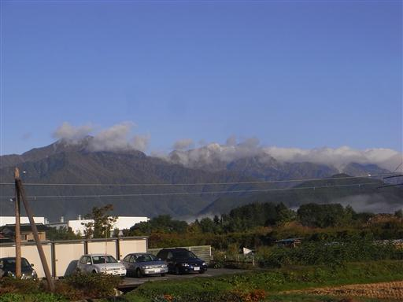
9:15 扇沢バス停到着。標高1420m。
北アルプスを代表する大きな登山基地だ。
ここから立山黒部アルペンルートが始まる。
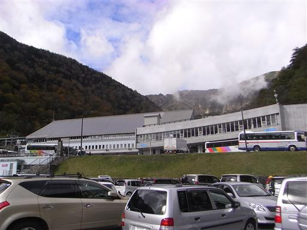
車道を少し歩いて登山道に入っていく。
山頂が雪なので少し心配したが、他にも歩いている人がいるので一安心。
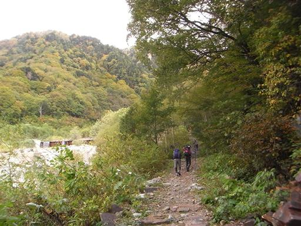
きれいに紅葉している木。
一つの木なのに見事に赤と緑が混ざっている。
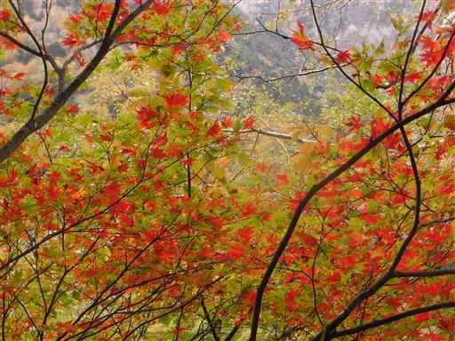
朝方は青空が広がっていたのに、今は雲が広がり付近はどんよりとしている。
もう少し歩けば雲の中に突入だ。
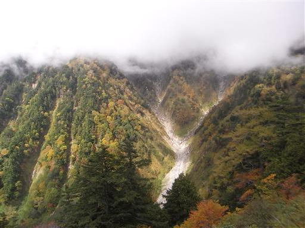
眼下には扇沢の駐車場がよく見えている。
この先で別の山仲間と偶然出会う。山で知り合いと偶然出会うのは初めてだ。
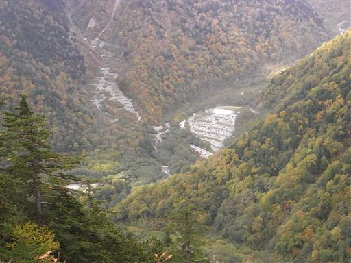
ガレ場のトラバース道。石が落ちて来そうで嫌なところだ。
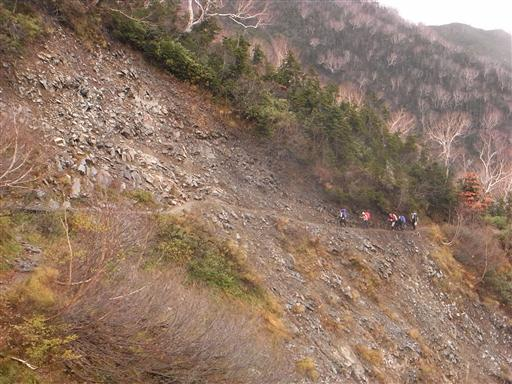
種池山荘に到着。付近は雪がちらついていてかなり寒い。
ここで昼食タイムにする。
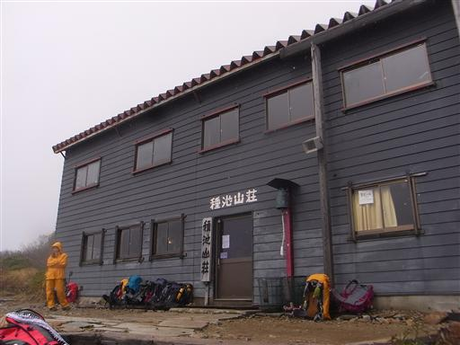
今日はここからまだ冷池山荘まで歩かなければならない。
少し雪も見えてきた。
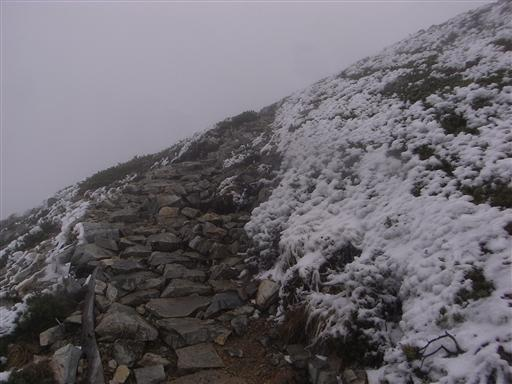
寒いのか3羽の雷鳥がうずくまっている。
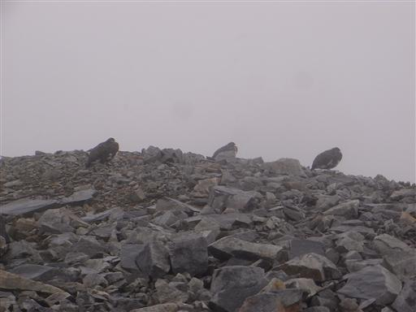
爺ヶ岳南峰に到着。爺ヶ岳は南峰、中峰、北峰と3つのピークがある。
中峰が一番標高が高い。
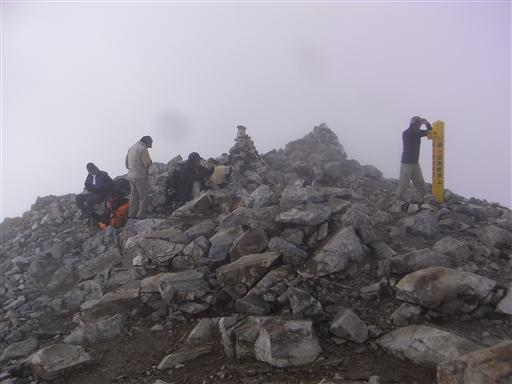
南峰から中峰へ向かう。
雲と雪に覆われた寒い登山道を歩いていく。
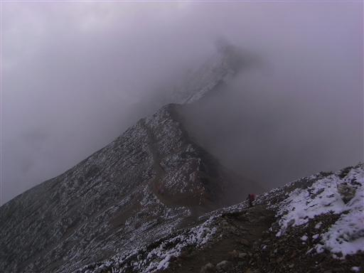
13:59 爺ヶ岳山頂到着。標高2670m。
残念ながら展望は全くない。
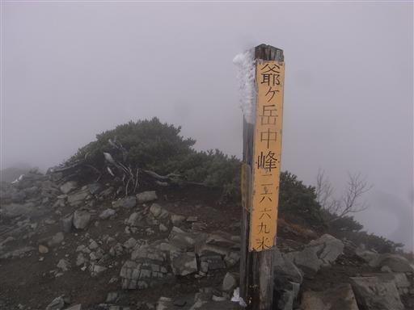
付近の草には雪が付着し、寒々しい景色が広がっている。
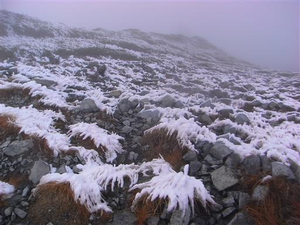
岩も凍りついた雪に覆われている。
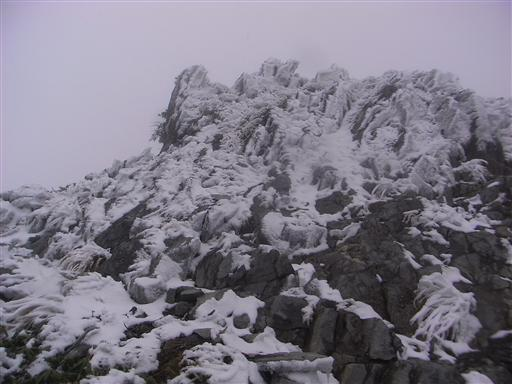
爺ヶ岳から冷池山荘に向かう登山道で、付近をうろうろしている雷鳥に出会う。
この辺りは北アルプスの中でも特に雷鳥が多い。
半分冬の白い羽に生え変わっている。
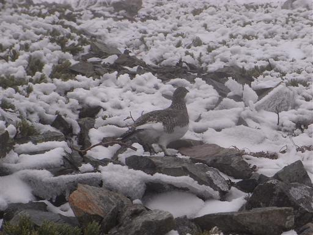
樹林帯の中に入ると風が収まり、寒さは幾分ましになる。
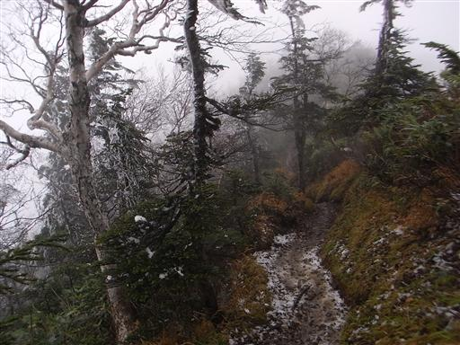
登山道に山中に似つかわしくないオブジェが置かれている。
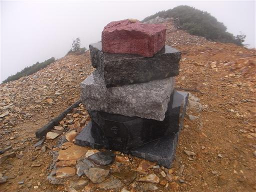
この辺りの崖はかなり急峻そうだが、全貌はよく見えない。
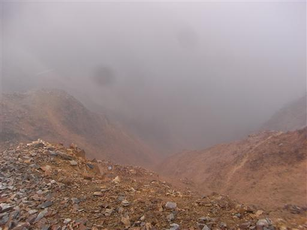
14:51 冷池山荘到着。標高2410m。
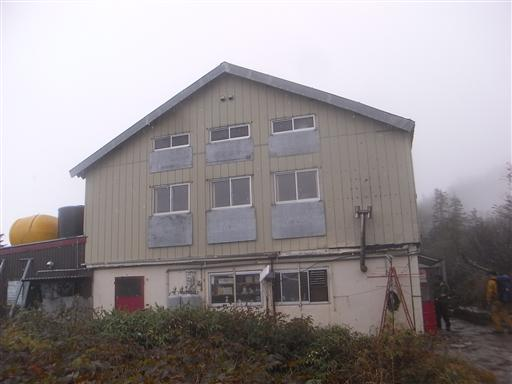
小屋の中に入るとそこは天国。
夕食まで時間があるので、小屋の中でのんびりと過ごす。
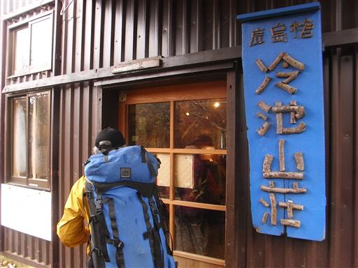